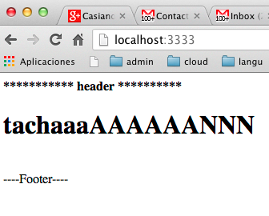

Siguiente: Código de Rack::Builder Subir: Rack, un Webserver Ruby Anterior: Ejemplo de Middleware: Rack::ETag Índice General Índice de Materias
Véase:
[~/local/src/ruby/sinatra/rack/rack-builder/own(master)]$ cat mybuilder.rb
module Rack
class MyBuilder
def initialize(&block)
@use = []
instance_eval(&block) if block_given?
end
def use(middleware, *args, &block)
@use << proc { |app| middleware.new(app, *args, &block) }
end
def run(app)
@run = app
end
def to_app
@use.reverse.inject(@run) { |app, middleware| middleware[app] }
end
def call(env)
to_app.call(env)
end
end
end
[~/local/src/ruby/sinatra/rack/rack-builder/own(master)]$ cat decorator.rb
class Decorator
def initialize(app, *options, &block)
@app = app
@options = (options[0] || {})
end
def call(env)
status, headers, body = @app.call(env)
new_body = ""
new_body << (@options[:header] || "----Header----<br/>")
body.each {|str| new_body << str}
new_body << (@options[:footer] || "<br/>----Footer----")
[status, headers, [new_body]]
end
end
[~/local/src/ruby/sinatra/rack/rack-builder/own(master)]$ cat app.rb
require 'rack'
require 'thin'
require 'mybuilder'
require 'decorator'
app = Rack::MyBuilder.new do
use Decorator, :header => "<strong>*********** header **********</strong><br/>"
cheer = ARGV.shift || "<h1>Hello world!</h1>"
run lambda { |env| [200, { 'Content-Type' => 'text/html' }, [ "<h1>#{cheer}</h1>" ]]}
end
Rack::Handler::Thin.run app, :Port => 3333, :Host => 'localhost'
[~/local/src/ruby/sinatra/rack/rack-builder/own(master)]$ cat Rakefile
desc "run app server"
task :default => :server
desc "run app server"
task :server, :greet do |t, args|
cheer = args[:greet] || 'bye, bye!'
sh "ruby -I. app.rb #{cheer}"
end
[~/local/src/ruby/sinatra/rack/rack-builder/own(master)]$ rake -T rake default # run app server rake server[greet] # run app server
[~/local/src/ruby/sinatra/rack/rack-builder/own(master)]$ rake server[tachaaaAAAAAANNN] ruby -I. app.rb tachaaaAAAAAANNN >> Thin web server (v1.5.1 codename Straight Razor) >> Maximum connections set to 1024 >> Listening on localhost:3333, CTRL+C to stop
